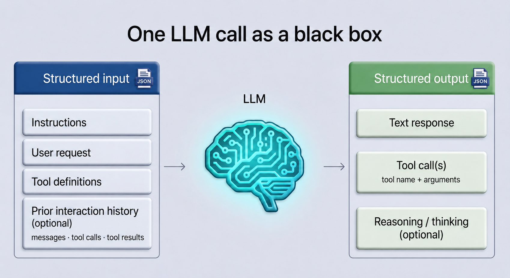
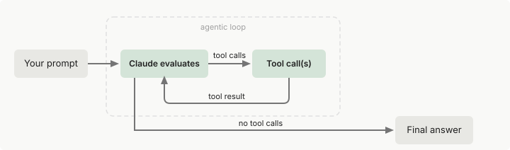
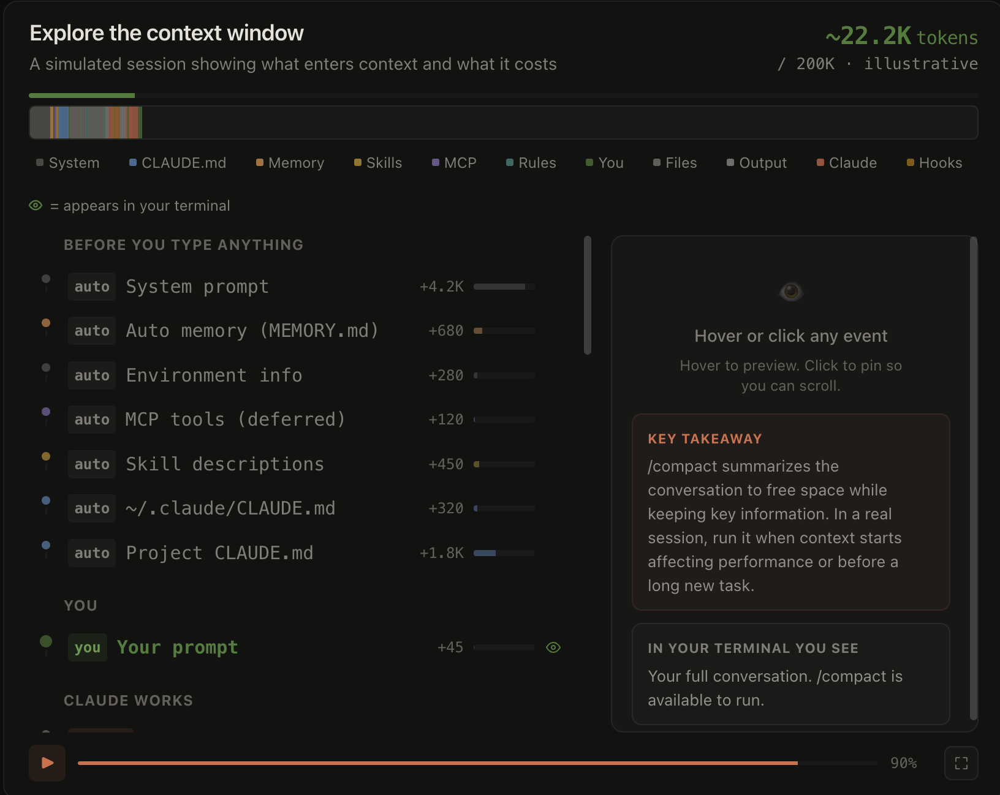

| Context source | Examples |
|---|---|
| Instructions | System prompts and project instructions |
| Available capabilities | Tool names, descriptions, and input schemas |
| Interaction history | User requests and earlier model responses |
| Actions and observations | Tool calls, tool results, file contents, and command output |
| Dynamically loaded information | Rules, skills, memories, or retrieved material supplied when relevant |
Study group guide · Chapter 1
The Minimal Agentic System
This chapter explains the smallest useful agentic system: an LLM, tools, and an agentic loop. The LLM produces text or proposed tool calls, tools provide capabilities beyond text generation, and the loop carries tool results into later model calls until the system returns a final response.
Context is the information available to each model call. The agentic harness is the surrounding system that supplies tools, manages context, and provides an execution environment; within it, the runtime coordinates an active run.
Chapter 0 explains how an LLM produces output. Here we treat one model call as a system boundary, then add tools, the agentic loop, context, and the surrounding harness that makes the process run.
1. The LLM: the brain
Chapter 0 covered how LLMs are pretrained and post-trained into useful assistants. For this chapter, we will mostly leave those internals behind and treat the LLM as a black box.
At this level, treat the LLM as a capable black-box component. It receives a structured input containing the information and capabilities relevant to the current task, and returns a structured output containing text, proposed tool calls, or both. Anthropic: Messages API
The interface boundary matters: the model does not execute the tools or run the larger system around itself.

Structured input
Application or API code commonly packages a model call as a structured, JSON-like request. That structure is the application-level container; it is not a claim that JSON is the model’s internal representation. Anthropic: Messages API
The input can include instructions, the user request, available tool definitions, and prior interaction history when relevant. That history can contain messages, earlier tool calls, and their tool results. Applications may send those earlier items again or use a provider’s conversation-state mechanism to carry them forward. Anthropic: Messages API; OpenAI: Conversation state
Structured output
The returned response is also structured at the application boundary. Depending on the request, model, and provider, it may contain a text response, one or more tool calls, optional reasoning / thinking information, or a combination of these. Not every response contains every category. A text response is model-generated text: it may be a user-facing answer or other text produced during the interaction. A tool call contains a tool name and the arguments for one proposed use. Anthropic: Messages API; OpenAI: Function calling; Anthropic: Handle tool calls
Reasoning or thinking information is optional and provider-dependent. An API may expose a thinking block, a summary, or no readable thinking content. This category does not imply that every model reveals all of its internal reasoning. Anthropic: Thinking
Why this boundary matters
One model call ends when it returns its output; by itself, it is not the full agentic system. The next sections explain how surrounding software interprets tool calls, performs the requested operations, supplies results to another call, and thereby forms an agentic loop.
2. Tools: the hands and senses
A tool is a capability that the surrounding system makes available to the model, such as inspecting files, running a command, or accessing an external service. Tools let the surrounding system retrieve information and perform operations beyond the LLM’s own text generation. OpenAI: Function calling
A coding-agent example
Claude Code is one concrete example of the capabilities a coding agent can expose. Its documentation groups the built-in capabilities into five broad categories: Claude Code: How Claude Code works; Claude Code: Tools reference
| Capability | What it enables |
|---|---|
| File operations | Read, edit, create, and reorganize files |
| Search | Find files and search or explore a codebase |
| Execution | Run shell commands, servers, tests, and Git |
| Web | Search for and retrieve documentation or other information |
| Code intelligence | With a language-specific plugin installed, surface errors and navigate definitions or references |
Other coding agents may package similar capabilities differently. These five rows describe one product, not a universal taxonomy.
How the model requests a tool
Before a model can request a tool, the surrounding software supplies a description of the available capability. That description typically includes a name, its purpose, and the inputs it accepts. The model receives this description—not the executable implementation. OpenAI: Function calling; Anthropic: Define tools
In simplified notation, an available tool and one concrete request might look like this:
| Artifact | Example |
|---|---|
| Description supplied to the model | search_files(query: string) |
| Structured request returned by the model | search_files(query="parser") |
The second line is structured model output requesting one use of the capability with a concrete argument. Producing that request does not itself search the repository. OpenAI: Function calling
Who executes the tool
The LLM does not execute the tool. The model proposes an operation by returning a structured request. Surrounding software handles and routes that request, while executable application code or a hosted service performs the actual work. OpenAI: Function calling; Anthropic: How tool use works
The surrounding application—or, in an agentic harness, its runtime—coordinates this handoff; the tool implementation performs the operation. In a small application, both responsibilities may live in the same process. Provider-hosted tools can instead execute on provider infrastructure.
What comes back after execution
Execution returns a tool result. Depending on the capability, that
result may contain data, a status, a confirmation, or an error. A
repository search might return:
["src/parser.py", "tests/test_parser.py"]
OpenAI: Function calling
In the following OpenAI diagram, Developer means the software on the application side of the model boundary—not necessarily a human developer acting during the call.

This figure shows one completed tool-calling round trip. The next section broadens the view to the agentic loop, where tool use may repeat before the system returns a final response.
3. The agentic loop: the heartbeat
A single model call ends when the LLM returns an output. An agentic loop connects that output to what happens next. If the output contains a tool call, surrounding software executes or routes the requested operation, supplies the result to another model call, and repeats the process. If the model returns a response with no further tool calls, the ordinary path is to return it and stop.
Different frameworks describe and implement this process differently. In this chapter, agentic loop means this minimal recurring model–tool–result cycle.

The loop at a glance
The Claude Agent SDK describes this cycle in five steps: Claude Agent SDK: How the agent loop works
- Receive the current input. The model receives the request together with relevant instructions, available tool definitions, and prior interaction.
- Evaluate and respond. The model produces text, one or more tool calls, or both.
- Execute tools. Surrounding software executes or routes the requested tools and collects their results.
- Repeat. The results are supplied to another model call. The model may request additional tools, and the cycle continues.
- Return the result. When the model produces a response with no further tool calls, the SDK returns it as the final result.
That is the Claude Agent SDK’s ordinary completion path. Other runtimes can apply an application-specific final-output condition. The OpenAI Agents SDK, for example, treats output as final when it contains text of the desired type and no tool calls. OpenAI Agents SDK: The agent loop
Each tool result adds information that was not available during the preceding model call. The next call is therefore not merely the same call repeated: it can use the new observation to choose a different action or prepare an answer.
The model’s output directs what happens next. Surrounding software keeps the cycle running by invoking the model, handling tool requests, supplying results, and returning the final response.
For coding agents, this same adaptive process often appears as gather context, take action, and verify results. The phases can blend together and repeat as each operation reveals new information. Claude Code: How Claude Code works
The loop explains how the system continues from one model call to the next. The following section examines the information available to each call: context.
4. Context: the working memory
“Working memory” is a teaching metaphor. In this chapter, context means the information the model can refer to while generating the current output. The context window is the limited capacity in which that information—and the output being generated—must fit.
From this system-level view, context is the model-visible part of the current input. It is not everything the surrounding application knows or stores. The surrounding application or harness may have access to databases, files, session records, or persistent memory, but that information cannot directly influence the current model output unless it is made available in the current context.
This is also how context supports the agentic loop. A later model call may receive the original request together with earlier model responses, tool calls, and returned tool results. The tool result changes the next call because it becomes new model-visible information—not because the model has been retrained or independently remembered the earlier execution. Claude Agent SDK: The context window

Official interactive walkthrough Explore how a context window changes during a session. Anthropic’s interactive walkthrough shows what loads at startup, how file reads and tool activity add context, and what happens when the session is compacted. Open the interactive walkthrough ↗What can be in context
The Claude Agent SDK gives one concrete product example: it lists the
system prompt, tool definitions, conversation history, tool inputs,
and tool outputs. Claude Code may also load
CLAUDE.md, auto memory, and Skill information. These are
product examples, not a universal list.
Claude Agent SDK: What consumes context;
Claude Code: Explore the context window
Large file reads and verbose command outputs can consume substantial context. Longer sessions with many tool calls therefore tend to accumulate more model-visible information than short ones.
Context is therefore selected and assembled, not simply identical to stored history. Two calls in the same application can receive different context even when the application still retains all earlier records. The difference is what the system makes available to the model for that particular call.
When the context window fills
Context grows as messages, calls, results, files, and command outputs accumulate, but the context window is finite. A system must eventually remove, replace, or summarize some earlier information to make room for later work. The window must also leave capacity for the output currently being generated, so managing accumulated input is part of keeping later responses possible.
Claude Code provides one product-specific strategy. Where possible, it clears older tool outputs first. If more space is needed, compaction replaces older conversation history with a shorter summary while attempting to retain recent exchanges and important decisions. Compaction is lossy: earlier details may not survive verbatim. Some Claude Code instructions stored outside the conversation can be loaded again after compaction. Claude Code: When context fills up; Claude Agent SDK: Automatic compaction; Claude Code: What survives compaction
This is why a context window is better understood as finite working information than as a perfect, permanent record.
Keep context efficient
Claude’s product documentation offers several strategies. Three relevant here are: Claude Agent SDK: Keep context efficient
- Use subagents for large subtasks. A subagent works in a separate context; only its final response returns to the parent instead of the full transcript.
- Be selective with tools. Every tool definition consumes context.
- Load large tool catalogs on demand. Tool search can defer detailed MCP schemas until needed.
Context is limited. Good agent systems decide what to load, what to keep separate, and what to summarize.
5. Beyond the minimal loop
The minimal loop explains a recurring mechanism: the model receives context and produces an output; surrounding software may execute requested tools, return their results, and invoke the model again until the run stops. A usable agent also needs a surrounding system that makes this mechanism operate.
The agentic harness and its runtime
An LLM does not invoke itself, execute tools, preserve tool results, or keep a run moving. The surrounding system that supplies tools, manages context, and provides an execution environment is what this book calls an agentic harness. Claude Code uses the same term: Claude is the model, and Claude Code is the harness around it. Claude Code Glossary: Agentic harness; Claude Code: How Claude Code works
This book uses agentic harness for that complete surrounding system. Within the harness, we use runtime for the software that coordinates an active run: invoking the model, routing tool requests, carrying observations forward, and determining whether execution continues or stops.
This is a teaching convention rather than standardized industry terminology. Different frameworks divide and name these responsibilities differently.
| Term | Meaning in this book |
|---|---|
| Agentic harness | The complete system around the model, including tools, context management, the execution environment, and the machinery that keeps work moving |
| Runtime | The part of the harness that coordinates an active run |
| Runner | A framework-specific object or entry point that starts and drives a run |
| Event loop | An implementation mechanism that processes events, state changes, and resumptions during execution |
| Agentic loop | The conceptual model–tool–result cycle described in this chapter |
For example, the OpenAI Agents SDK exposes a
Runner that repeatedly invokes the model, executes tool
calls, appends results, and returns final output. Google ADK uses
Runtime for a broader engine that coordinates agents,
tools, callbacks, state, services, and a Runner
operating through an event loop. These terms overlap, but their
scopes are not identical.
OpenAI Agents SDK: Running agents;
Google ADK: Runtime event loop
Workflows: predefined orchestration
A workflow arranges LLM calls and tools through an overall control structure defined in software. An agentic loop instead allows model output and newly observed results to influence which action happens next. Anthropic: Building effective agents
This distinction is not simply “fixed versus intelligent.” A workflow step can still ask an LLM to classify, evaluate, generate, or decompose a task. What remains predefined is the larger arrangement of stages, branches, roles, or feedback paths.
Anthropic official diagram · 1 of 5
Prompt chaining
A predefined sequence in which each stage uses the previous stage’s output.

Anthropic official diagram · 2 of 5
Routing
A classifier directs the input to an appropriate downstream path.

Anthropic official diagram · 3 of 5
Parallelization
Independent calls run concurrently and their outputs are combined.

Anthropic official diagram · 4 of 5
Orchestrator-workers
A central model chooses subtasks, delegates them, and combines the results.

Anthropic official diagram · 5 of 5
Evaluator-optimizer
One model generates while another evaluates and provides feedback for another iteration.

1 of 5
Workflow figures reproduced from Anthropic, Building effective agents.
Anthropic categorizes orchestrator–workers as a workflow even though the orchestrator dynamically chooses its subtasks. The surrounding topology—an orchestrator delegating to workers and synthesizing their results—remains predefined. Anthropic: Building effective agents
Workflows and agents can also be combined. A workflow may contain an agentic step, while an agent may invoke a deterministic workflow as one available capability.
Thinking: optional model-side reasoning
Some models can spend additional reasoning effort before producing text or a tool call. Thinking is optional and provider-dependent—not a required stage of the agentic loop—and any exposed thinking may be summarized or omitted. Anthropic: Thinking
A related historical pattern: ReAct
ReAct, introduced in 2022, is a prompting approach that interleaves model-generated reasoning traces with task-specific actions. Observations from the environment then inform later reasoning and action.
ReAct is an influential example of the pattern of reasoning, acting, observing, and repeating. It is related to the agentic loop described here, but the terms are not interchangeable: the general loop does not require explicit reasoning traces to be exposed. Yao et al.: ReAct
6. Summary
The minimal agentic system in this chapter consists of an LLM, tools, and an agentic loop. The model produces text or proposed tool calls; software outside the model performs requested operations, returns their results in later context, and continues the loop until the system produces a final response.
Context is the finite information available to each model call. The agentic harness is the complete surrounding system, while its runtime coordinates an active run. Workflows can arrange model calls and tools through predefined control structures. These terms form this chapter’s teaching map rather than a standardized industry taxonomy.
Chapter glossary
Review the glossary entries for the concepts used most directly in this chapter.
- Large language model (LLM) The model-side black box that produces structured output such as text and proposed tool calls.
- Tool A capability the model can request but does not execute itself.
- Agentic loop The recurring model–tool–result cycle.
- Context window The finite capacity shared by current input and generated output.
- Agentic harness The complete surrounding system that turns a model into a usable agent.
- Runtime The part of the harness that coordinates an active run.
- Runner A framework-specific object or entry point that starts and drives a run.
- Event loop An implementation mechanism that processes events and resumptions during execution.
- Workflow A predefined arrangement of model calls, tools, branches, or feedback paths.
- ReAct An influential reasoning, acting, and observing pattern.
Check your understanding
Why can making more tools available make an agent less efficient?
Every tool definition consumes context, even when the tool is irrelevant to the current task. A larger tool catalog leaves less room for task-specific information and gives the model more capabilities to distinguish among. Systems can therefore benefit from exposing only relevant tools or loading large tool catalogs on demand. Claude Agent SDK: Keep context efficient
What should the runtime check before treating a model output as the final result?
In the ordinary completion path described in this chapter, the output must satisfy the application’s configured final-output condition and contain no further tool calls that need to be executed. If a required tool call remains, the runtime should execute or route it and continue the loop rather than returning the accompanying text as the final answer. OpenAI Agents SDK: The agent loop
References
Every external resource cited in this chapter is listed below using the same direct URL, including links to specific sections within a longer guide. Extended references is reserved for related resources that are not cited in the chapter itself.
Core system and interfaces
Start here: the first two guides provide the chapter’s main product-level and mechanism-level companion reading.
- Claude Code — How Claude Code works A concrete coding-agent account of models, tools, results, and the product-specific harness.
- Claude Agent SDK — How the agent loop works A focused walkthrough of model responses, tool execution, returned results, repetition, and stopping.
- Anthropic — Messages API Structured input messages and application-visible response content blocks.
- Anthropic — Thinking Provider-specific thinking output, summaries, omission, and model-dependent behavior.
- OpenAI — Function Calling Tool definitions, model-produced calls, application execution, matched results, later requests, and final output.
- Anthropic — Handle tool calls Call/result association, returned content, and error results for client tools.
- Claude Code — Tools reference A current product-specific inventory of the tools available in Claude Code.
- Anthropic — Define tools Names, descriptions, and input schemas supplied in tool definitions.
- Anthropic — How tool use works The model/application contract and the distinction between client- and server-executed tools.
Loop, runtime, and context
- OpenAI Agents SDK — Running agents A framework-specific Runner loop that executes calls, appends results, repeats, and returns final output.
- OpenAI Agents SDK — The agent loop The ordinary loop path, including tool execution, configured final output, and stopping.
- Google ADK — Runtime event loop A product-specific Runtime containing a Runner, execution logic, events, and services.
- OpenAI — Conversation state How prior messages and outputs can be supplied to later model requests.
- Claude Agent SDK — The context window The information carried across model calls during an agent run.
- Claude Code — Context window A concrete account of instructions, messages, files, and tool outputs sharing a model’s working context.
- Claude Agent SDK — What consumes context Messages, tool definitions, tool results, and other inputs that occupy context.
- Claude Code — When context fills up Automatic compaction and the behavior of a long-running session near its context limit.
- Claude Agent SDK — Automatic compaction How the SDK summarizes earlier context when a session approaches its limit.
- Claude Code — What survives compaction Which context mechanisms persist, reload, or disappear after compaction.
- Claude Agent SDK — Keep context efficient Selective tool exposure and on-demand loading for preserving useful context space.
Related architectures and patterns
- Claude Code Glossary — Agentic harness Claude Code’s product-specific definition of the harness surrounding the model.
- Anthropic — Building effective agents The workflow/agent distinction and five common workflow structures.
- Yao et al. — ReAct: Synergizing Reasoning and Acting in Language Models The original paper’s approach to interleaving reasoning traces and task-specific actions.
Extended references
- Anthropic — Manage tool context Tool search, programmatic tool calling, prompt caching, and context editing as responses to different sources of tool-related context pressure.
- Anthropic — Tutorial: Build a tool-using agent A runnable progression from one tool call to a hand-written agentic loop and then an SDK-managed runner.
- Anthropic — Tool Runner SDK (beta) A beta provider-specific runner that automates tool execution, request/response cycling, conversation state, validation, and loop termination.
- GitHub Copilot SDK — The agent loop An end-to-end account of the Copilot CLI loop, responsibility boundaries, model turns, accumulated context, and completion signals.
- LangGraph — Workflows and agents Runnable implementations of prompt chaining, parallelization, routing, orchestrator–worker, evaluator–optimizer, and agent patterns.